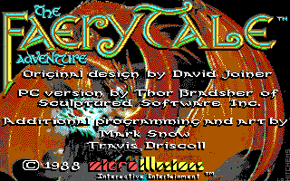
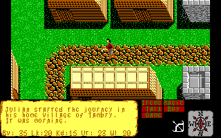

名稱：仙境故事1／仙境傳奇1／童話冒險1 (The Faery Tale Adventure Book 1，英文版)
簡介：MicroIllusions 1987年出品的角色扮演遊戲，1989年移植至DOS，台灣則由智冠代理
進口，以3D斜角畫面呈現，採單人即時方式戰鬥 [待補]。


保護：手冊密碼，破解碼：
FTC.EXE, FTE.EXE
85 C0 74 23 9A
-- -- EB -- --
03 00 7C B7 9A
-- -- -- 00 --